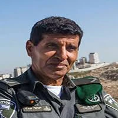

כפר עזה
פלד יזהר ז"ל
תת-ניצב בדימוס, מפקד במג"ב ואיש משפחה
סיפור חיים
יזהר פלד ז״ל, בנם של שושנה ומנצור פלד, שעלו לארץ מתימן, נולד בט׳ באדר תשכ״א, 25 בפברואר 1961, במושב חלץ.
יזהר גדל והתחנך במושב חלץ שבמישור החוף הדרומי. הוא למד בבית הספר היסודי ״הרב קוק״ במושב תלמים, ובהמשך בבית הספר החקלאי ״מקווה ישראל דתי על שם הרמב״ם״. מי שלמדו עימו זכרו אותו כאדם מלא הומור, שמחת חיים, ציונות, אהבת המולדת ולב ענק.
לאחר לימודיו התגייס לצה״ל ושירת כלוחם וכקצין בחטיבת הצנחנים. כבר בראשית דרכו בלטו בו תכונות של מנהיגות, יושרה, אחריות ואהבת הארץ.
יזהר נשא לאישה את גילה, שגדלה במושב תלמים הסמוך לחלץ. במהלך השנים נולדו להם ארבעה ילדים: יהונתן, רעות, דניאל ורותם. המשפחה התגוררה בקיבוץ כפר עזה, ושם בנו יזהר וגילה את ביתם וחייהם.
יזהר היה אב אוהב ומסור, בן זוג נאמן וסב גאה. לאחר שילדיו בגרו ונישאו, זכה ליהנות מנכדיו והרבה לבלות איתם. כלתו ניצן סיפרה על אבא וסבא אהוב, שהיה קשור מאוד לנכדיו, שהתגוררו גם הם בכפר עזה.
בשנת 1995 ביקש יזהר להמשיך לתרום למדינה והצטרף למשטרת ישראל. במהלך שירותו למד לתואר ראשון במזרחנות ולתואר שני בהיסטוריה של המזרח התיכון.
לאורך שנות שירותו מילא שורה ארוכה של תפקידי פיקוד ומטה במשמר הגבול, בשגרה ובחירום. בראשית דרכו שימש כמפקד מרכז שליטה כיסופים של מג״ב עזה, ובהמשך כקצין אג״ם של מג״ב מרכז ושל מג״ב עזה, כקצין ענף יישובים וכראש ענף מבצעים.
פקודיו תיארו אותו כהתגלמות המילה יושרה - אדם שהאמת הייתה נר לרגליו, שהתקדם בזכות עבודה, התמדה ועקשנות, ולא בזכות קשרים או פוליטיקה. מפקד של עקרונות, דרך ועמידה איתנה על מה שנכון.
במרץ 2005 קודם לדרגת ניצב משנה ומונה לסגן מפקד מג״ב איו״ש. בהמשך שימש כראש מחלקת התיישבות ומתנדבים, מפקד מג״ב ערבה ומפקד מג״ב דרום.
בנובמבר 2012 מונה למפקד מג״ב ירושלים בדרגת תת־ניצב. ביולי 2016 מונה למפקד מג״ב איו״ש, אחת הגזרות הגדולות והמאתגרות ביותר במג״ב.
פקודיו סיפרו עליו שהיה מפקד חכם, מוכשר, צנוע וערכי; איש שאהב את מפקדיו ולוחמיו, ידע להקשיב לצדק, אהב את המדינה והיה אדם משכמו ומעלה.
את דרכו אפיינו מקצועיות, ראייה לטווח רחוק, אהבת האדם ואהבת המדינה. לאורך השנים הטביע חותם במערך היישובים החילי, הוביל לוחמים בתקופות של טרור ובאירועים מורכבים, והיה מפקד נערץ שאחריו הלכו לוחמים במשך עשרות שנות שירותו.
ביולי 2020 פרש יזהר לגמלאות ממשטרת ישראל, לאחר שנים ארוכות של שירות, פיקוד, אחריות ותרומה לביטחון המדינה.
שבעה באוקטובר והימים שאחריו בבוקר שבת, שמחת תורה תשפ״ד, 7 באוקטובר 2023, חדרו מחבלים לקיבוץ כפר עזה במסגרת מתקפת הטרור הרצחנית על יישובי עוטף עזה.
באותו בוקר שהו יזהר וגילה בביתם בכפר עזה יחד עם בנם דניאל, שהגיע לבקרם בחג. עם הישמע האזעקות נכנסו לממ״ד. גילה שלחה הודעה לבני המשפחה המתגוררים בקיבוץ והנחתה אותם להיכנס לממ״ד ולסגור.
בהמשך שוחח רותם, בנם, בטלפון עם דניאל, ששהה עם הוריו בממ״ד. במהלך השיחה נשמע דניאל אומר שהמחבלים נכנסים, ואז נותק הקשר.
כעבור ימים ארוכים קיבלה המשפחה את הבשורה הקשה על הירצחם.
יזהר פלד נרצח בביתו בקיבוץ כפר עזה בכ״ב בתשרי תשפ״ד, 7 באוקטובר 2023, יחד עם אשתו גילה ובנם דניאל. בן 62 היה במותו.
יזהר, גילה ודניאל הובאו תחילה למנוחות בבית העלמין בקיבוץ גת, ובאוקטובר 2025 הועברו למנוחת עולמים בבית העלמין של כפר עזה.
זיכרון ומילים מהלב על מצבתו כתבו אוהביו: ״אבא שלנו, אהובנו, סבא, בעל, אח, חבר, מנהיג, גיבור.״
שלמה, אחד ממכריו, כתב עליו: ״מפקד, אדם וחבר. הכאב עצום. הלב מסרב להאמין, העין מסרבת לראות והעצב משתלט על הנשמה והגוף. זכיתי להכיר אדם. מפקד משכמו ומעלה. זן נדיר של אדם ומפקד.״ הוא הוסיף כי יזהר היה דוגמה ומופת בחייו ובמותו, וגיבור ישראל.
במשמר הגבול ספדו לו וכתבו כי החיל ינצור לעד את תרומתו הגדולה לביטחון מדינת ישראל. מוזיאון משמר הגבול העלה סרטון לזכרו, המתאר את שירותו ארוך השנים.
באנדרטה שהוקמה לזכר בני משפחת פלד שנרצחו נכתב על יזהר כי היה מפקד ערכי שהלך בראש אנשיו; מוביל ומחנך של דורות לוחמים שהיו לו כמו משפחה. עוד נכתב עליו שהיה אהוב ורגיש, איש מלא הומור, טוב לב ואהבת האדם והארץ.
בני משפחת פלד יזמו את מיזם ההנצחה ״הגומי של דנדי״ לזכר דניאל, גילה ויזהר. המיזם, שנולד מרוחו השמחה והצבעונית של דניאל, מזמין אנשים להציב קערות סוכריות גומי צבעוניות לצד תמונתם והקדשה לזכרם - דרך לזכור אותם במתיקות, בצבע ובאהבה.
יזהר נזכר כמפקד נערץ, איש יושרה, מנהיג וגיבור; אדם של שירות, ערכים, ציונות ואהבת הארץ. לצד כל אלה, היה גם בעל, אב, סבא, אח וחבר אהוב - איש משפחה חם ורגיש, שהותיר אחריו מורשת של אחריות, ענווה, מנהיגות ואהבת אדם.